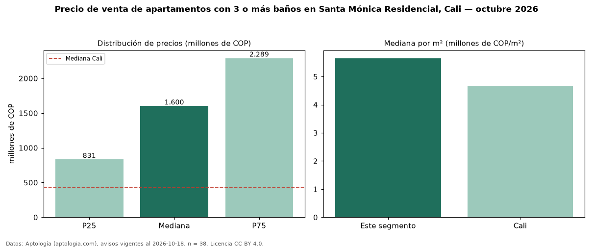

Precio de venta de apartamentos con 3 o más baños en Santa Mónica Residencial, Cali — octubre 2026
Con 38 avisos vigentes, el precio mediano de apartamentos con 3 o más baños en venta en Santa Mónica Residencial, Cali es COP 1,60 mil millones. Frente a la mediana de todos los apartamentos en venta de Santa Mónica Residencial (COP 1,20 mil millones, n = 45), queda 33 % por encima; este segmento reúne el 84 % de esos avisos. Por metro cuadrado, la mediana es COP 5,65 millones/m² (n = 31), 1 % por debajo del conjunto de referencia (COP 5,68 millones/m²). La mitad central de los avisos va de COP 831 millones a COP 2,29 mil millones (razón 2,8), una dispersión alta. El área mediana anunciada es 165 m². El segmento con más oferta es el de 3 o más habitaciones (37 avisos, mediana COP 1,50 mil millones). La administración mediana declarada es COP 1,24 millones al mes (n = 21). El estrato más frecuente es 5 (53 % de los avisos con estrato). Datos: Aptología (aptologia.com), CC BY 4.0 — https://www.aptologia.com/venta/cali/santa-monica-residencial. Archivos: PDF, CSV con las cifras y gráfica PNG.

| Avisos únicos | 38 |
|---|---|
| Percentil 25 | COP 831.250.000 |
| Mediana | COP 1.600.000.000 |
| Percentil 75 | COP 2.289.256.381 |
| Mediana por m² | COP 5.650.684 |
Fuente: avisos vigentes de portales inmobiliarios recopilados por Aptología, deduplicados (mínimo 30 avisos únicos por celda). Precios pedidos, no cerrados. Fecha: 2026-10-18.